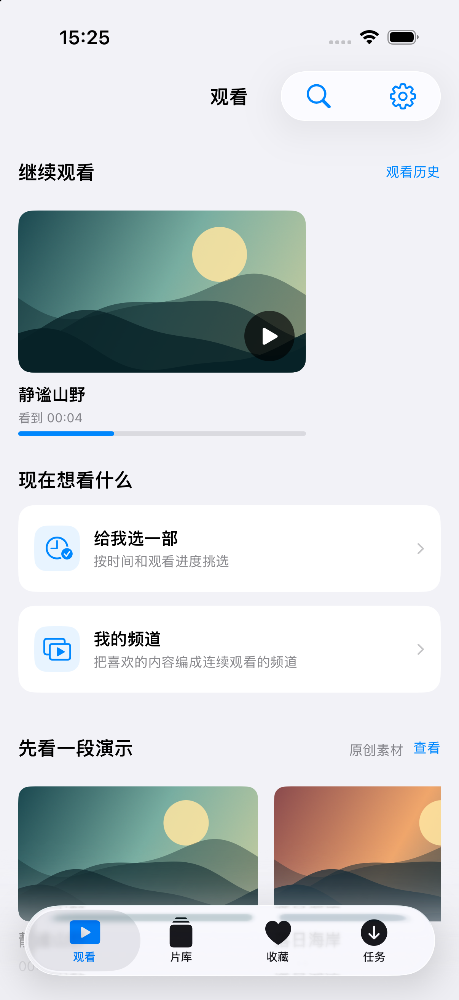
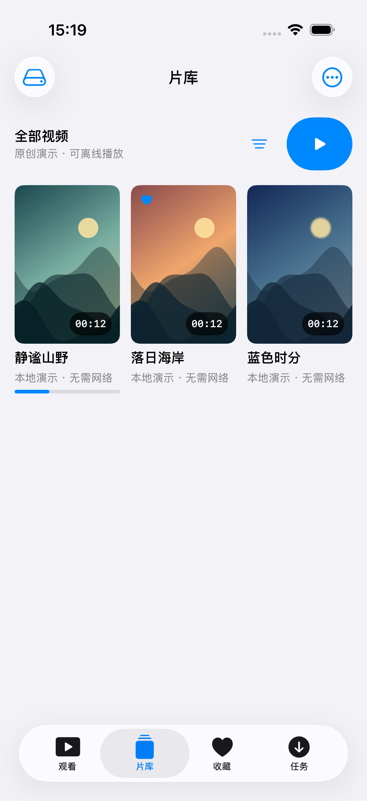
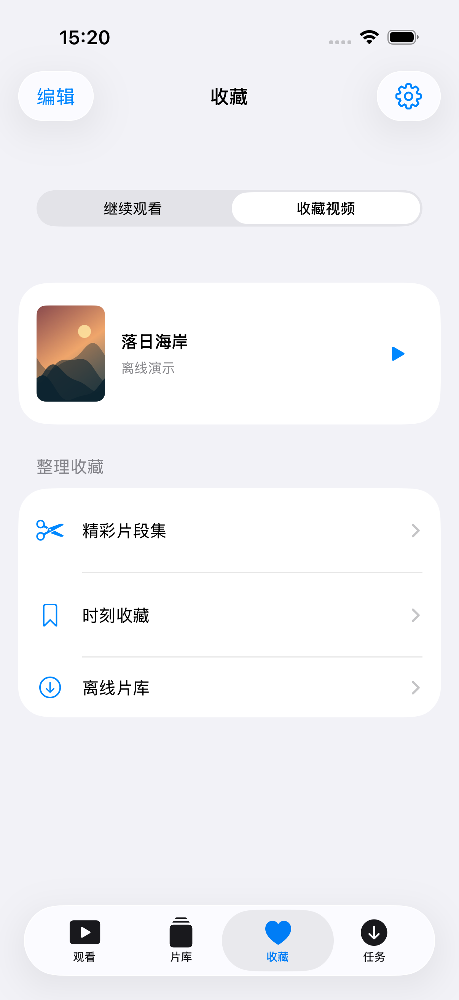
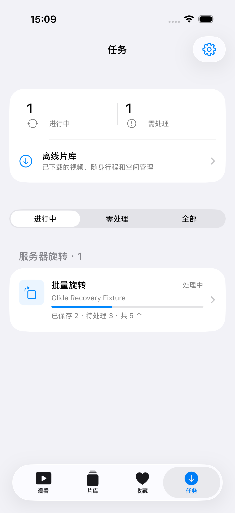
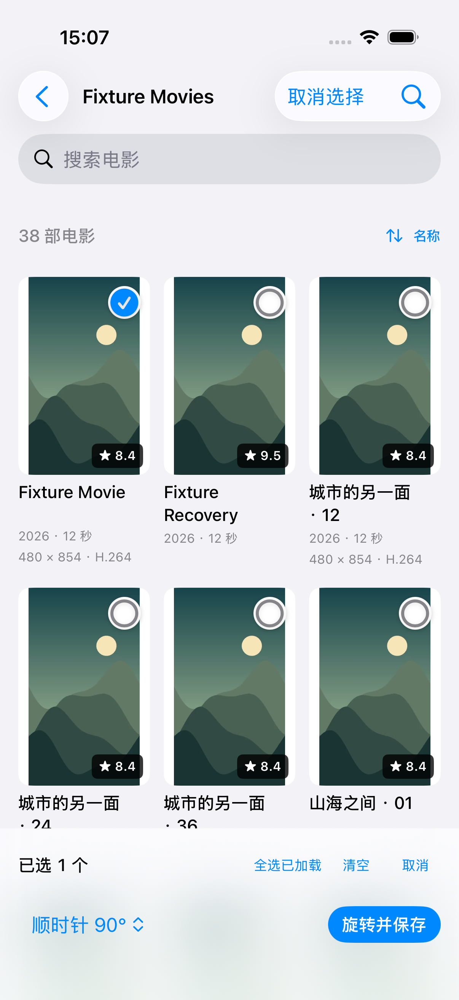
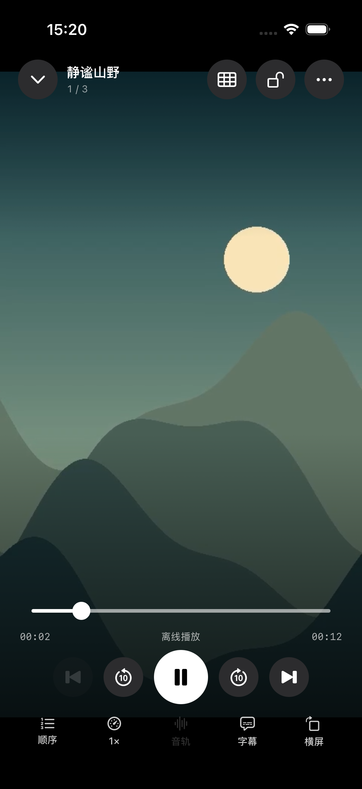

找一次，看可用版本。
跨 Jellyfin、Emby、本地及已下载内容搜索，选择来源与文件版本，记住适合你的选择。
接着上次看，找到下一部。
观看、片库、收藏、任务，各就各位。
当前商店版 1.15.0 · 2.0 即将发布
iPhone 与 iPad · iOS 17 或更高版本


熟悉的原生交互
一个入口，连接私人片库
媒体直连你的来源
GLIDE 2.0 · 观看优先
四个清晰的入口，更紧凑的媒体信息。让你少找按钮，多看内容。
2.0 即将发布下面展示新版本界面，商店可用版本以 App Store 为准。
打开就是继续观看。剧名、季集与播放进度分层呈现；有空时，让 Glide 按可用时间选一部，或打开自己的私人频道。
减少重复标题和分散工具，把空间留给视频。剧集优先展示作品身份，搜索、范围、排序与播放顺序集中处理。
视频收藏先出现，观看历史随时切换。把喜欢的位置留为时刻，把起止片段编成合集，下次直接回来。

下载和 Jellyfin 旋转队列集中到任务页。直接在原视频网格勾选，保留方向预览，再查看每一批的完成和待处理数量。

把现有片库，变成想看的片库
跨 Jellyfin、Emby、本地及已下载内容搜索，选择来源与文件版本，记住适合你的选择。
按时间与容量准备行程，接着下载剧集。完成后做离线检查，没有网络也能连续看。
结合时间缩略图、章节和收藏的时刻，浏览局部时间段，直接从记得的位置播放。
内容地图依赖系统可解码的本地／离线文件，或 Jellyfin 已生成的 Trickplay；离线能力以来源、文件格式及详情页实际可用操作为准。

方向对了，观看才顺手
不用离开播放器重新找文件。旋转预览与保存接在当前视频后面；需要处理多部时，就在原列表看着缩略图勾选。
方向保存目前覆盖符合条件的 MP4／MOV／M4V。Jellyfin 需匹配服务器版本的 Glide Toolkit 1.1.0+、授权及可写媒体目录；WebDAV 需通过安全替换检查。SMB 与 Emby 暂不提供原文件方向保存。
了解使用条件播放器的本分
系统与兼容内核、清楚的媒体信息。常用的音轨、字幕、倍速仍然直接可达，双指缩放和横竖屏观看各得其所。
实际播放取决于设备、文件与服务器。ASS 原字体需实际提供；外部字幕层不随 PiP／AirPlay 输出。

你的媒体，不必搬家
视频可以留在原来的地方。Glide 连接你选择的来源，不提供影视片源，也不要求把片库上传到 Glide。
导入视频，或授权原目录。管理下载和行程，在没有网络时继续看。
iPhone 与 iPad浏览电影、剧集与家庭视频，选择音轨字幕，继续服务器上的播放进度。
Jellyfin 配套插件可提供服务器方向整理连接 NAS，浏览目录与视频预览，匹配同名外挂字幕。WebDAV 缓存目录索引，主动刷新再获取变化。
SMB 2/3 · WebDAV 可选方向保存打开有权限的 HTTP(S) 视频地址，导入 STRM 链接文件，集中管理入口。
使用你有权访问的内容版本动态
四个主入口，媒体信息重新分层。下载与旋转集中到任务，原视频网格直接勾选批量整理。
查看 2.0 更新统一搜索、随身离线、精彩片段，以及推荐信息和播放缩放改进，已经可以在商店版本中体验。
前往 App Store2.0 尚未标记为公开上架。下载按钮前往 App Store，实际可用版本以你的商店地区显示为准。
iPhone 与 iPad · 当前商店版 1.15.0 · 2.0 即将发布